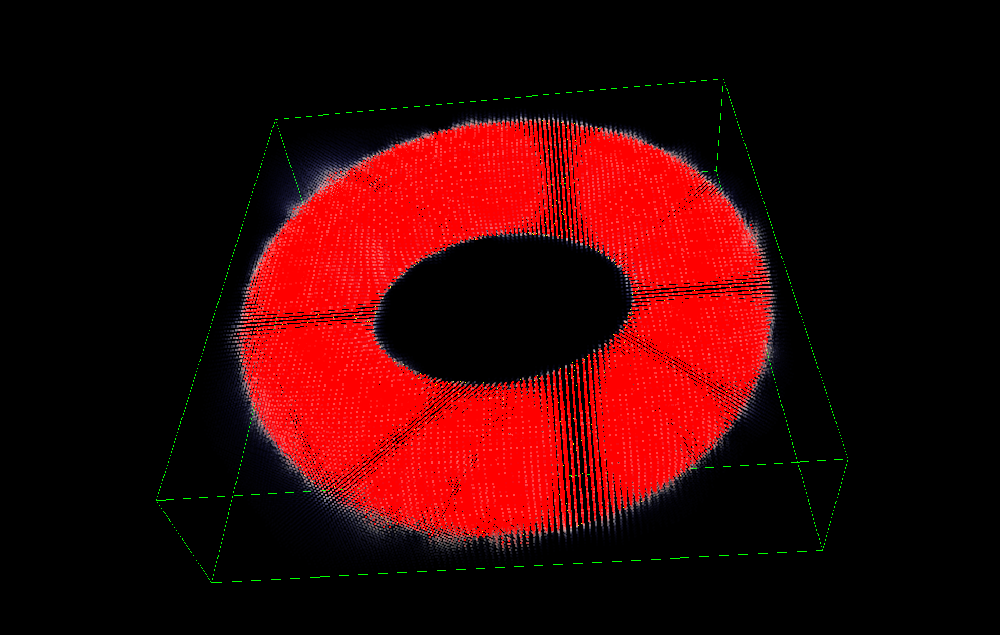
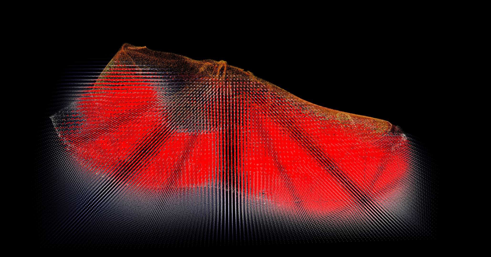
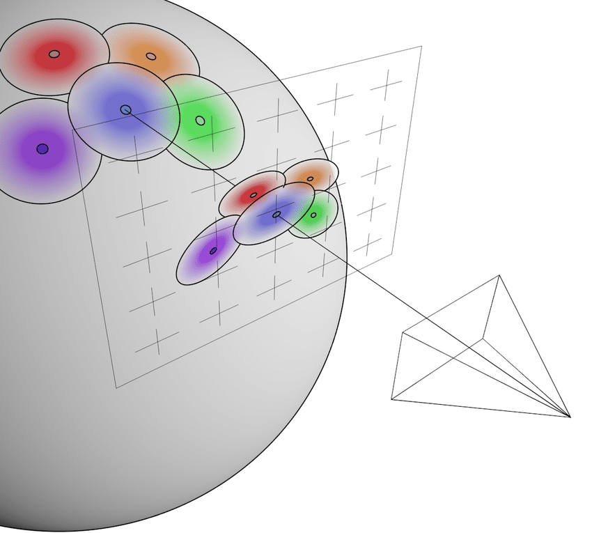
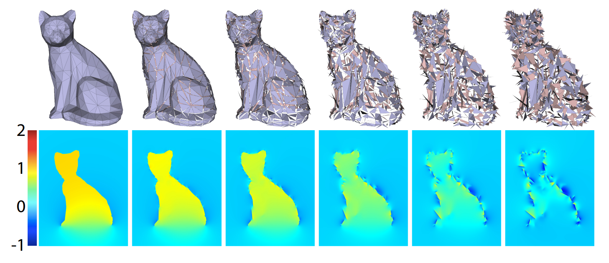
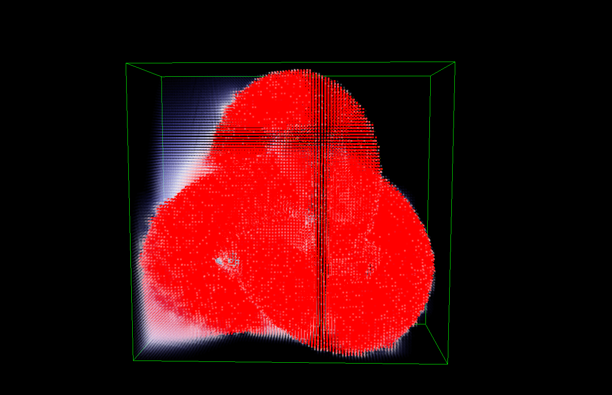
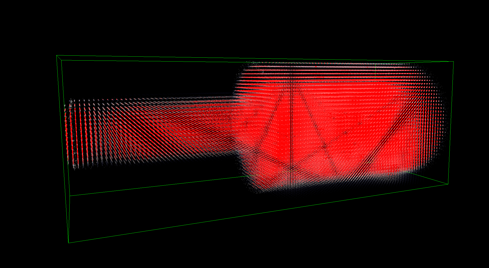
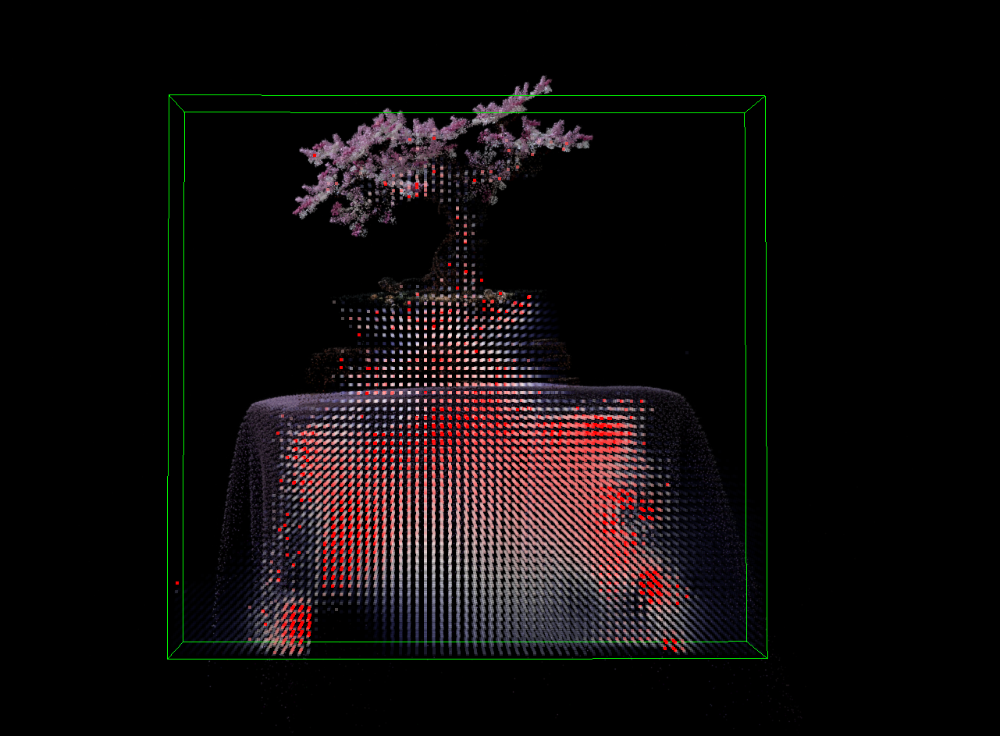

Authors
Lewis Ghrist. Advisor: Adam Mally. CIS 4970 Senior Capstone Design Project, University of Pennsylvania.
Abstract
3D Gaussian Splatting (3DGS) represents a scene as a cloud of anisotropic Gaussian primitives. It produces excellent real-time renders, but it gives you no surface, no closed volume, and no notion of inside or outside, which makes geometric operations like segmentation, surface extraction, or hole filling awkward. This project builds a volumetric soft inside-indicator field directly from splat data, without reconstructing a mesh first.
The starting point is the generalized winding number (GWN), a robust inside/outside test for meshes and point clouds. Splats are treated as oriented disks whose normal and area come from the covariance matrix, with normal signs fixed by a camera-visibility vote. Real 3DGS scenes also contain many non-disk-like splats, so the winding field is combined with a second, Gaussian-occupancy field: flat splats mostly provide surface (winding) evidence, while fat splats mostly provide interior (occupancy) evidence. The two fields are bounded to $[0,1]$ and fused with a soft-OR. The whole pipeline runs as WebGPU compute shaders inside a splat viewer, and produces clean inside/outside fields on synthetic shapes and plausible ones on real captures.
Introduction
Problem. Gaussian splats are visually convincing, but they are not geometry in the usual sense. A 3DGS scene is just a list of Gaussians, each with a position, covariance, opacity, and color. Nothing in that list says which region of space is solid. Many downstream tasks (selecting an object, extracting a surface, deciding where a reconstruction has holes, or editing) want exactly that information.
Idea. For meshes and point clouds, the generalized winding number [5, 1] answers "is this point inside?" robustly, even when the input has holes, noise, or non-manifold pieces. Splats already carry most of what that computation needs: a position, a local orientation (from the covariance), and a local size. The goal of this project was to see how far that idea goes when applied directly to splat data, and to fix what breaks.
Contributions.
- A per-splat conversion from covariance to a normal axis, a disk area, and a continuous surface-likeness weight.
- A camera-visibility vote that assigns consistent normal signs without building a $k$-NN graph.
- A fused field that combines a winding-number surface term with a Gaussian occupancy term, so that both flat "shell" splats and fat interior splats contribute useful evidence.
- A WebGPU implementation integrated into an interactive splat viewer, with grid-based visualization of the field.
Background
3D Gaussian Splatting
In 3DGS [6], each primitive $i$ has a center $\mu_i$, an opacity $\alpha_i \in (0,1)$, view-dependent color, and a covariance $$\Sigma_i = R_i S_i S_i^{\top} R_i^{\top},$$ where $R_i$ is a rotation and $S_i = \mathrm{diag}(\sigma_1, \sigma_2, \sigma_3)$ holds the per-axis standard deviations (axes labeled so that $\sigma_1 \ge \sigma_2 \ge \sigma_3$). The eigenvectors of $\Sigma_i$ are the columns of $R_i$ (the principal axes of the ellipsoid), and its eigenvalues are the variances $\lambda_k = \sigma_k^2$, sorted as $\lambda_1 \ge \lambda_2 \ge \lambda_3$.
Rendering only needs the 2D projection of each Gaussian, so 3DGS stores no normals and no surface. Methods such as SuGaR [3] and 2D Gaussian Splatting [4] recover geometry by changing how splats are trained, regularizing or flattening them, and then extracting a mesh. This project instead takes standard, already-trained splats as they are and builds a volumetric field from them.
Generalized Winding Numbers
For a closed, oriented surface $S$, the winding number at a point $\mathbf{x}$ is the signed solid angle that $S$ covers when seen from $\mathbf{x}$, divided by the full sphere $4\pi$: $$w(\mathbf{x}) = \frac{1}{4\pi}\int_S \frac{(\mathbf{y}-\mathbf{x})\cdot\mathbf{n}(\mathbf{y})}{\|\mathbf{y}-\mathbf{x}\|^3}\,dA(\mathbf{y}).$$ It equals $1$ inside and $0$ outside. Jacobson et al. [5] observed that the same integral still makes sense when $S$ has holes or is otherwise broken. In that case $w$ becomes a smooth field that is close to 1 deep inside, close to 0 far outside, and takes intermediate values near defects. Formally, $w$ is harmonic away from $S$ and jumps by exactly 1 when crossing it.
Barill et al. [1] extended this to oriented point clouds by giving each point $\mathbf{p}_i$ a normal $\mathbf{n}_i$ and an area $a_i$ and discretizing the integral: $$w(\mathbf{x}) \approx \sum_i \frac{a_i}{4\pi}\,\frac{(\mathbf{p}_i-\mathbf{x})\cdot\mathbf{n}_i}{\|\mathbf{p}_i-\mathbf{x}\|^3}.$$ Each point acts as a small oriented patch. When $\mathbf{x}$ is inside and the normals point outward, $(\mathbf{p}_i-\mathbf{x})$ and $\mathbf{n}_i$ mostly agree and the sum is positive. In practice the result is also fairly tolerant of errors in the individual areas $a_i$, which matters here because splat areas are only approximate.


Method
The pipeline has five GPU passes. The first two run once per loaded scene. The last three are run on demand for the current query grid:
- Precompute: eigen-decompose each $\Sigma_i$, giving a normal axis, an area $a_i$, and a surface weight $s_i$.
- Orient: fix the sign of each normal with a camera-visibility vote.
- Surface field $\widetilde{W}(\mathbf{x})$: weighted winding number, clamped to $[0,1]$.
- Occupancy field $O(\mathbf{x})$: soft union of Gaussian kernels.
- Fusion: $F(\mathbf{x}) = 1-(1-\widetilde{W}(\mathbf{x}))(1-O(\mathbf{x}))$.
Splats as Oriented Disks
A splat that has converged onto a surface is typically flat, like a pancake lying on that surface. Its thinnest direction, the eigenvector $\mathbf{e}_3$ of the smallest eigenvalue $\lambda_3$, is therefore a good estimate of the surface normal axis. The two larger axes span the tangent plane, and the one-standard-deviation ellipse in that plane has area $$a_i = \pi\,\sigma_1\sigma_2 = \pi\sqrt{\lambda_1\lambda_2}.$$ This gives each splat everything the point-cloud winding number needs (a position, a normal axis, and an area) without $k$-NN searches or Voronoi areas.
Not every splat is a pancake, however. To measure how disk-like a splat is, I use a continuous surface-likeness score that compares the thinnest axis to the middle one: $$s_i = 1-\frac{\lambda_3}{\lambda_2}\in[0,1], \qquad b_i = 1-s_i.$$ A flat disk ($\lambda_3 \ll \lambda_2$) gets $s_i \approx 1$. A round blob ($\lambda_3 \approx \lambda_2$) gets $s_i \approx 0$, i.e. it is "blob-like" with $b_i \approx 1$. No threshold is involved, and every splat is scored on a continuous scale.
Consistent Normal Orientation
An eigenvector has no sign: $\mathbf{e}_3$ and $-\mathbf{e}_3$ are equally valid, but the winding sum needs every normal pointing outward. Flipping normals away from the centroid only works for convex shapes. Propagating orientation over a $k$-NN graph works in general, but once you have built that graph you might as well use a standard point-cloud method.
Instead, I use the fact that splats are optimized to be seen. On a closed opaque surface, a point visible from a camera has its outward normal facing that camera. So I place $N$ synthetic cameras (16 by default) on a Fibonacci sphere around the splat centroid, at $1.5\times$ the scene's half-extent, all looking inward. For each camera $c$, splat centers are written into a coarse ($16\times16$) depth buffer, and a splat counts as visible to $c$ if its depth is within a small tolerance of the front-most depth at its pixel. Each visible camera casts a vote $d_c = \mathbf{n}_i\cdot\mathbf{v}_c$, where $\mathbf{v}_c$ is the unit direction from the splat to the camera: $$V_i = \sum_{\substack{c\ \text{visible}\\ |d_c|\ge 0.1}} d_c, \qquad \mathbf{n}_i \leftarrow \begin{cases}-\mathbf{n}_i & V_i \lt 0\\ \phantom{-}\mathbf{n}_i & \text{otherwise.}\end{cases}$$ Using $d_c$ as the vote, rather than just its sign, means face-on views count strongly. Grazing views, where the sign is unreliable, count little or (below 0.1) not at all. Opacity does not enter the vote; it is used only in the two fields below. Only the sign of the normal changes. The axis from the eigen-decomposition is kept.
Why Plain GWN Is Not Enough
With oriented normals, the point-cloud winding number worked well on clean test shapes made only of flat splats. Real 3DGS scenes are messier. During optimization, many splats end up inside objects, and these tend to be fat and nearly isotropic because they are seen from many directions. Thin needle-like splats also appear. A fat splat's smallest eigenvector is an essentially arbitrary direction, so treating it as an oriented surface patch injects large, random terms into the winding sum and badly distorts the interior field.
Filtering these splats out did not work well. Interior splats are often partly visible, so visibility-based filtering does not reliably catch them. More importantly, filtering throws away information. The key shift was to stop treating fat splats as noise: they are a different kind of evidence about the same object. A flat splat says "there is a surface here," and a fat splat says "this region is inside."
Surface Field
Every splat contributes to the winding field, scaled by its trained opacity $\alpha_i$ and its surface-likeness $s_i$: $$W(\mathbf{x}) = \sum_i \alpha_i\, s_i\, \frac{a_i}{4\pi}\,\frac{(\mathbf{p}_i-\mathbf{x})\cdot\mathbf{n}_i}{\|\mathbf{p}_i-\mathbf{x}\|^3}, \qquad \widetilde{W}(\mathbf{x}) = \mathrm{clamp}\big(W(\mathbf{x}),0,1\big).$$ Flat, opaque splats dominate, while blobs and transparent splats contribute little. The clamp is a modeling choice. Overlapping splats on a surface double-count area and can push $W$ above 1, and a negative value has no meaning as "inside-ness." Since we only want an indicator, both are folded into $[0,1]$.
Occupancy Field
Each splat also contributes a bounded "membership" value that falls off with the splat's own shape, via the Mahalanobis distance: $$o_i(\mathbf{x}) = \alpha_i\, b_i\, \exp\!\Big(-\tfrac12(\mathbf{x}-\mu_i)^{\top}\Sigma_i^{-1}(\mathbf{x}-\mu_i)\Big)\in[0,1].$$ Points near the center of a fat, opaque splat get values near 1. Because of $b_i$, flat splats contribute almost nothing here. Summing these values could exceed 1, so they are combined with a soft (probabilistic) union instead: $$O(\mathbf{x}) = 1-\prod_i\big(1-o_i(\mathbf{x})\big).$$ Since each factor lies in $[0,1]$, so does $O$. Several weak contributions reinforce each other, but the result saturates at 1 instead of growing without bound.
Fusion
The two fields are combined with a soft-OR: $$F(\mathbf{x}) = 1-\big(1-\widetilde{W}(\mathbf{x})\big)\big(1-O(\mathbf{x})\big) = \widetilde{W} + O - \widetilde{W}\,O.$$ If either field is confident a point is inside, $F$ is high. If both are weak, $F$ stays low. It also always holds that $F \ge \max(\widetilde{W}, O)$ and $F \in [0,1]$. Because both inputs are dimensionless values in $[0,1]$, no relative scale factor needs tuning. An earlier version simply added the two fields with a hand-picked relative weight, which was unbounded and required tuning.
What is given up. $F$ is no longer a generalized winding number in the strict sense. The clamp and the Gaussian occupancy term are not harmonic, so $F$ loses the jump-harmonic structure of the original winding number. What it keeps is the property this project actually needed: a continuous, bounded field that separates inside from outside and degrades gracefully where data is missing.
Implementation
The system is built on a WebGPU Gaussian splat viewer (TypeScript and WGSL) that loads standard 3DGS .ply files. All five passes are compute shaders. The precompute pass uses a closed-form $3\times3$ symmetric eigen-solver, and the orientation pass uses an atomic-min depth buffer per synthetic camera. Query points are the cell centers of a regular grid over the scene's bounding box, with the resolution along the longest axis set interactively.
Field evaluation is brute force: every query point loops over every splat, so the cost is $O(NM)$ for $N$ splats and $M$ query points. Two cheap culls help in practice: splats with $s_i \approx 0$ skip the winding loop (and $b_i \approx 0$ skip occupancy), and occupancy ignores splats more than $3\sigma$ away in Mahalanobis distance (plus a coarse world-space distance cutoff). No hierarchical acceleration (e.g. the Barnes–Hut tree of [1]) is used yet.
Visualization. Query points are drawn as point sprites colored blue → white → red as $F$ goes from 0 to 1, with opacity $F^2$. Points with $F$ below about 0.1 are not drawn at all. In all images, outside points are therefore invisible, uncertain points ($F \approx 0.5$) appear white, and confident inside points are red. The green box is the query grid's bounds.
Results
I tested the method on procedurally generated splat scenes, on single-object splat captures, and on the bonsai scene from Mip-NeRF 360 [2].


Synthetic shapes. The torus and trefoil-knot scenes are tubes of flat disk splats with added position and rotation jitter, uneven density, and a small fraction of splats with badly perturbed orientations. Both are good tests of orientation: the inner ring of the torus and the crossings of the knot are concave and partly hidden from outside cameras, which would break a centroid-based flip. In both, the interior of the tube is filled and the surrounding space, including the torus's hole, stays empty. The field respects the genus-1 topology rather than filling the hole in.
Captured objects. On the shoe and bottle, the splats come from real optimization and are much less regular. The bulk of each object reads as inside, with a thin white band of intermediate values at the boundary. The narrow bottle neck is captured but reads somewhat less strongly than the body.
Full scene. The bonsai scene is the hardest case, and the least successful: it is a full room-scale capture with floaters, thin foliage, and a large draped table. The table volume is identified as inside, while background floaters, which are scattered and unsupported, stay near zero. The interior is noticeably patchier than in the synthetic cases, with regions of intermediate values, reflecting the irregular splat distribution of a real capture. Very thin structures such as the leaves and branches are not filled. They have little volume for either term to detect at this grid resolution.

Limitations and Future Work
- Performance. Evaluation is $O(NM)$. A Barnes–Hut style tree [1] over splats would make dense grids and large scenes practical.
- Needles. The surface-likeness score only compares $\lambda_3$ to $\lambda_2$, so a needle ($\lambda_1 \gg \lambda_2 \approx \lambda_3$) is scored as a blob and contributes occupancy along its length. Detecting and down-weighting extreme shapes is a simple next step.
- Orientation. The vote assumes the object is roughly closed and visible from a sphere of cameras around it. Open surfaces, deep cavities, and interior views of scenes are not well covered.
- Scaling of $W$. Weighting by $\alpha_i s_i$ lowers the winding sum wherever splats are transparent or not fully flat, so $\widetilde{W}$ alone can under-report inside-ness. The fusion relies on $O$ to make up for this.
- Using the field. The project focused on building the field. The natural next steps are to use it: densifying or hole-filling splats where $F$ is uncertain near the surface, extracting surfaces at a level set of $F$, and segmenting objects.
Conclusion
This project combined a modern scene representation with a classic topological tool. Treating flat splats as oriented disks makes the generalized winding number work on splat data, and a camera vote provides consistent orientation cheaply. Recognizing fat interior splats as occupancy evidence, rather than noise, is what makes the result hold up on real captures. The final field is not a pure winding number, but it gives 3DGS scenes the bounded, robust inside/outside signal they lack, and a foundation for geometry-aware splat editing and repair.
References
- [1] G. Barill, N. Dickson, R. Schmidt, D. Levin, A. Jacobson. Fast winding numbers for soups and clouds. ACM Trans. Graph. 37(4), 2018.
- [2] J. T. Barron, B. Mildenhall, D. Verbin, P. P. Srinivasan, P. Hedman. Mip-NeRF 360: Unbounded anti-aliased neural radiance fields. CVPR, 2022.
- [3] A. Guédon, V. Lepetit. SuGaR: Surface-aligned Gaussian splatting for efficient 3D mesh reconstruction and high-quality mesh rendering. CVPR, 2024.
- [4] B. Huang, Z. Yu, A. Chen, A. Geiger, S. Gao. 2D Gaussian splatting for geometrically accurate radiance fields. SIGGRAPH, 2024.
- [5] A. Jacobson, L. Kavan, O. Sorkine-Hornung. Robust inside-outside segmentation using generalized winding numbers. ACM Trans. Graph. 32(4), 2013.
- [6] B. Kerbl, G. Kopanas, T. Leimkühler, G. Drettakis. 3D Gaussian splatting for real-time radiance field rendering. ACM Trans. Graph. 42(4), 2023.